Helium in nanoscale cavities
Computational Nanomechanics, New Jersey Institute of Technology
Research intern · Summer 2025 · grand canonical Monte Carlo
Neutron irradiation produces helium inside reactor cladding, and the helium collects in nanometre-scale voids where it can drive swelling and embrittlement. The question I worked on is how much helium a void of a given size holds at reactor temperatures. I modelled helium inside a rigid spherical zirconium cavity and swept the chemical potential in the grand canonical ensemble (fixed μ, V, T), so that the number of atoms in the cavity is an output of the simulation rather than an input.
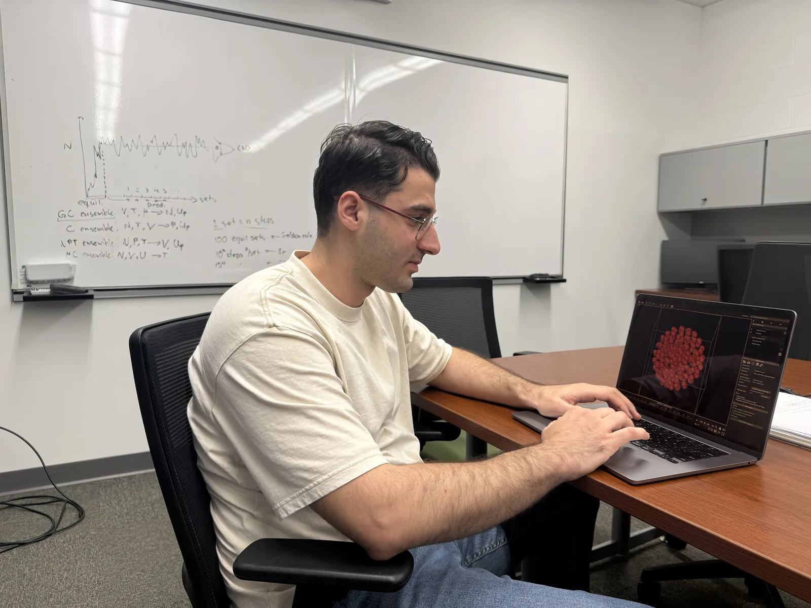
First, reproduce a published result
Before trusting any new number, I used the group’s in-house GCMC code to reproduce an existing one: the elastic modulus of argon confined in spherical pores at 87.3 K (Gor, Poromechanics VI, ASCE, 2017). The modulus comes from particle-number fluctuations alone, K = kBT ⟨N⟩² / (V Var N), which makes it a demanding test: the variance converges far more slowly than the mean. Over 2.25–5.5 nm my values follow the published curve to within about two standard errors; for larger pores 5,000 sets are not enough to converge the variance, and the plot says so rather than hiding those points.

Helium in a zirconium cavity
I then built the helium–zirconium model myself. Helium–helium interactions use the Lennard-Jones parameters of Weaver and Alexeenko (ε/kB = 9.87 K, σ = 2.52 Å); zirconium parameters come from the Universal Force Field, combined by Lorentz–Berthelot rules, with the wall’s atom density taken from the close-packed hcp-Zr(0001) plane (0.107 Å−2). The cavity is a 3.0 nm sphere. I ran 28 chemical-potential points at 573 K and 973 K, the range of cladding operating and transient temperatures, and wrote a Python driver that edits the input deck, launches runs in parallel and collects the logs, so the whole sweep is reproducible from one script.
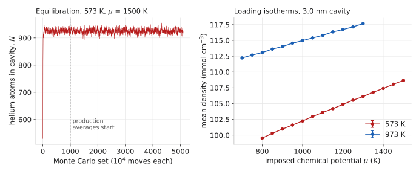
On the whiteboard
Most of the method was worked out at the board before it became an input file. On the left, the life of a GCMC run: a transient while the cavity fills, then production sets whose fluctuations around ⟨N⟩ carry the physics, next to which quantities each ensemble fixes and which it returns. On the right, the energy that every trial move is judged by: a pairwise Lennard-Jones sum over fluid atoms plus a wall term, built up from a single atom over a flat surface to the integrated potential of a spherical cavity.
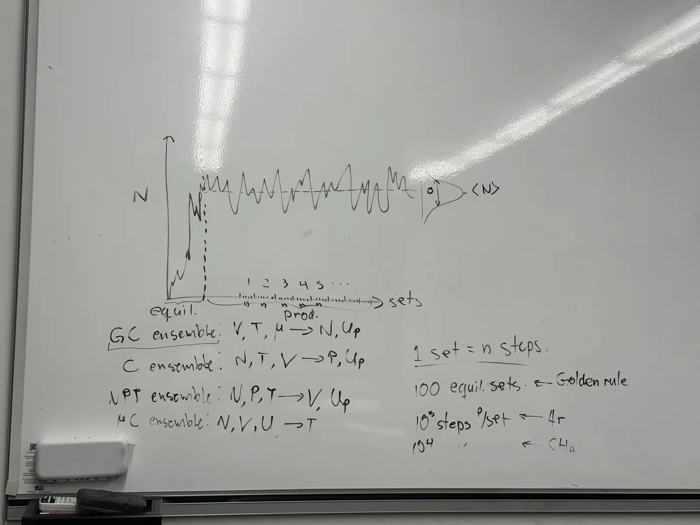
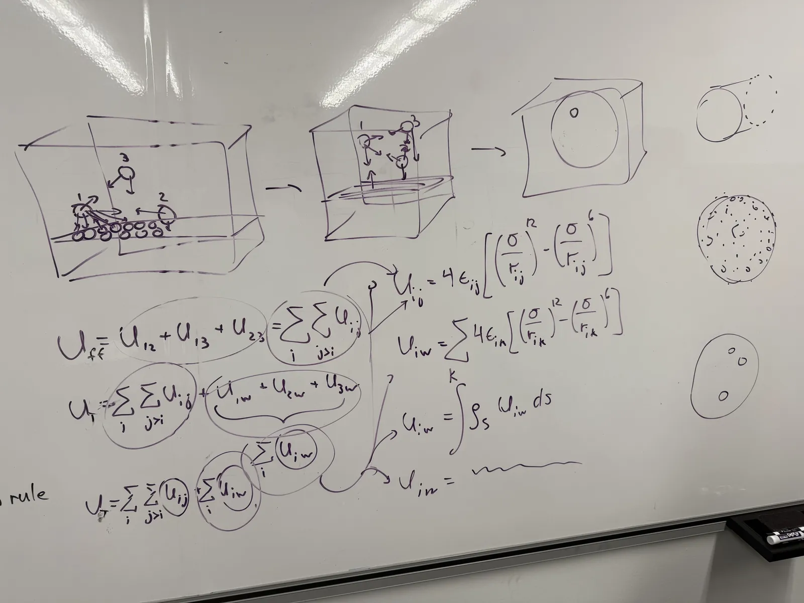
Notes
I learned the statistical mechanics behind the method by deriving it by hand, from the kinetic theory of an ideal gas to the partition functions of the microcanonical, canonical and isothermal–isobaric ensembles. Nine pages, in the order I would teach them:
- Pressure from molecular motion
- Temperature from kinetic energy, and the ideal-gas law recovered
- The laws of thermodynamics and Gibbs entropy
- Counting microstates: the Boltzmann distribution by Lagrange multipliers
- Microcanonical ensemble and the thermodynamic potentials
- Canonical ensemble: ensemble averages
- Canonical ensemble: the partition function
- Isothermal–isobaric ensemble
- Isothermal–isobaric ensemble, continued
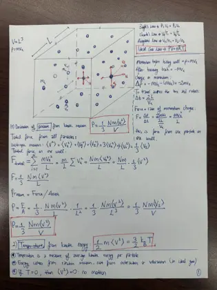
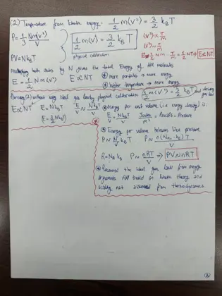
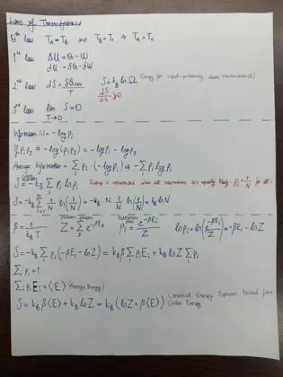
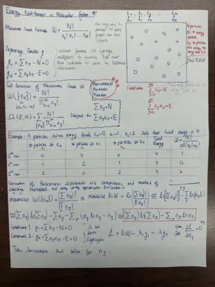
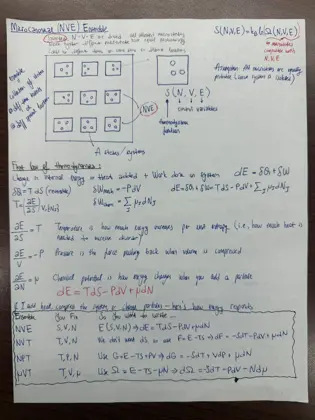
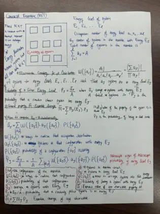
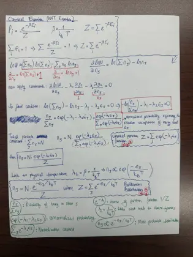
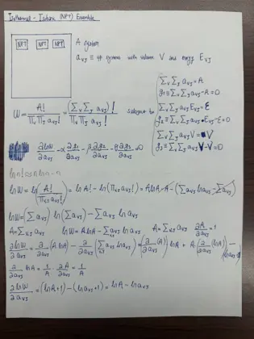
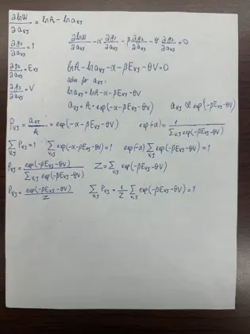
all nine pages as one PDF (2 MB)
Code and data
| run_gcmc_sweep.py | Edits the input deck for each wall strength and pore size, launches the runs on a process pool and collects the logs |
|---|---|
| argon_sphere.inp | Input deck for argon in a spherical silica pore (the validation runs) |
| helium_sphere.inp | Input deck for helium in a spherical zirconium cavity |
| argon_modulus.py | Fluctuation modulus with block-averaged errors, compared against the published curve |
| helium_isotherms.py | Equilibration trace and density isotherms from the helium logs |
| argon_modulus.csv, helium_isotherms.csv | The numbers behind both figures |
| computational_chemistry | The Metropolis codes I wrote first to learn the method: one particle in a well, fifty particles in a box, a temperature sweep |
The simulations themselves ran on the group’s in-house GCMC code, which is not public; the scripts above drive it and analyse its output.
At a glance
| Method | Grand canonical Monte Carlo (μVT): displacement, insertion and deletion moves |
|---|---|
| Runs | 28 helium runs (573 K and 973 K) and 92 argon validation runs over six wall strengths |
| Length | 5,100 sets × 104 moves per run; 1,000-set equilibration discarded |
| Statistics | Block averaging for means and for the fluctuation modulus |
| My code | Python run automation (parallel pool) and the analysis pipeline; earlier Metropolis teaching codes written to learn the method |
What I would do next
The density results stand on their own, but the pressure of helium this dense should not be read from the ideal-gas law, which is what my first write-up did; the next step is the virial pressure computed inside the simulation, together with a Widom insertion check that the realised chemical potential matches the imposed one, and longer runs so that the fluctuation modulus converges for the larger pores as well.
References
Method
- D. Frenkel and B. Smit, Understanding Molecular Simulation: From Algorithms to Applications, 2nd ed. (Academic Press, San Diego, 2002). ISBN 0-12-267351-4.
- M. P. Allen and D. J. Tildesley, Computer Simulation of Liquids, 2nd ed. (Oxford University Press, 2017). ISBN 978-0-19-880319-5.
- A. R. Leach, Molecular Modelling: Principles and Applications, 2nd ed. (Prentice Hall, Harlow, 2001). ISBN 0-582-38210-6.
- R. Shankar, Fundamentals of Physics: Mechanics, Relativity, and Thermodynamics (Yale University Press, 2014). ISBN 978-0-300-19220-9.
Confined fluids and validation
- G. Y. Gor, “Bulk modulus of not-so-bulk fluid,” in Poromechanics VI (ASCE, 2017), pp. 465–472. The result reproduced above.
- G. Y. Gor, D. W. Siderius, C. J. Rasmussen, W. P. Krekelberg, V. K. Shen and N. Bernstein, “Relation between pore size and the compressibility of a confined fluid,” J. Chem. Phys. 143, 194506 (2015). doi:10.1063/1.4935430
- C. D. Dobrzanski, M. A. Maximov and G. Y. Gor, “Effect of pore geometry on the compressibility of a confined simple fluid,” J. Chem. Phys. 148, 054503 (2018). doi:10.1063/1.5008490
- M. S. A. Baksh and R. T. Yang, “Model for spherical cavity radii and potential functions of sorbates in zeolites,” AIChE J. 37, 923–930 (1991). doi:10.1002/aic.690370615
Interaction parameters
- A. K. Rappé, C. J. Casewit, K. S. Colwell, W. A. Goddard III and W. M. Skiff, “UFF, a full periodic table force field for molecular mechanics and molecular dynamics simulations,” J. Am. Chem. Soc. 114, 10024–10035 (1992).
- A. B. Weaver and A. A. Alexeenko, “Revised variable soft sphere and Lennard-Jones model parameters for eight common gases up to 2200 K,” J. Phys. Chem. Ref. Data 44, 023103 (2015).
Helium in nuclear materials
- X. W. Zhou, C. S. Y. Hui, D. B. Robinson and J. D. Sugar, “Accelerated kinetic Monte Carlo method for simulations of helium bubble formation in metals,” J. Comput. Phys. 523, 113666 (2025). doi:10.1016/j.jcp.2024.113666
- J. R. Lamarsh and A. J. Baratta, Introduction to Nuclear Engineering, 3rd ed. (Prentice Hall, Upper Saddle River, NJ, 2001). ISBN 0-201-82498-1.
- E. E. Lewis, Fundamentals of Nuclear Reactor Physics (Academic Press, 2008).